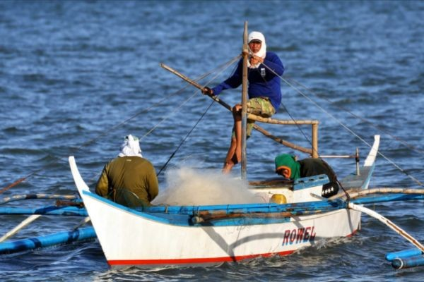

AGRIKULTURA- Isang agham at sining na may kinalaman sa pagpaparami ng mga hayop at mga tanim o halaman.
MGA PATAKARAN AT PROGRAMA HINGGIL SA PAGPAPAUNLAD SA SEKTOR NG AGRIKULTURA
PANAHON NA HINDI PA NASASAKOP ANG PILIPINAS
-Ang mga sinaunang Pilipino ay nakakapag-may-ari ng lupa sa pamamagitan ng pagiging unang nagtayo ng bahay.
PANAHON NG KASTILA
-Encomienda: lupang gantimpala sa matapat na naglilingkod sa hari ng Espanya at mga taong tumulong sa pananakop sa Pilipinas.
PANAHON NG AMERIKANO
-Binili ng Amerika ang 160,000 hectares ng lupa mula sa mga prayle para sa mga magsasaka
-Land Registration Act ng 1902: Nagkaroon ng mga titulo dahil dito.
-Public Land Act ng 1902: Pamamahagi ng mga lupaing pampubliko sa mga pamilya na nagbubungkal ng lupa
PANAHON NG KASARINLAN
-Batas Republika Blg. 1160: Nagtatag sa National Resettlement and Rehabilitation Administration (NARRA)
-Batas Republika Blg. 1190 ng 1954: Bilang proteksyon laban sa mapang-abuso na may-ari ng lupa osa mga manggagawa. Ito ay laban sa mga Absentee Landlord.
-Agricultural Land Reform Code of 1963: Nagpalaya sa mabigat na trabaho ng magsasaka mula sa kanilang pagkaalipin sa utang at kahirapan. Nilagdaan ni Diosdado Macapagal noong Agosto 8, 1963.
-Atas ng Pangulo Blg. 2 ng 1972: Isailalim sa reporma sa lupa ang buong Pilipinas noong panahon ni Pangulong Marcos.
-Atas ng Pangulo Blg. 27: Bibilhin ng pamahalaan ang mga lupang sakahan na taniman ng palay/mais na lampas sa 7 ektaryang limitasyon at ipamamahagi ito sa mga magsasakang walang lupa.
-Batas Republika Blg. 6657 ng 1988: “Comprehensive Agrarian Reform Law (CARL)” na inaprubahan ni Corazon Aquino noong Hunyo 10, 1988. Kabilang dito ang lahat ng publiko at pribadong lupang agrikultural at nakapaloob sa Comprehensive Agrarian Reform Program (CARP).
Ipinamamahagi ang lahat ng lupang agrikultural anuman ang tanim nito sa mga walang lupang magsasaka.